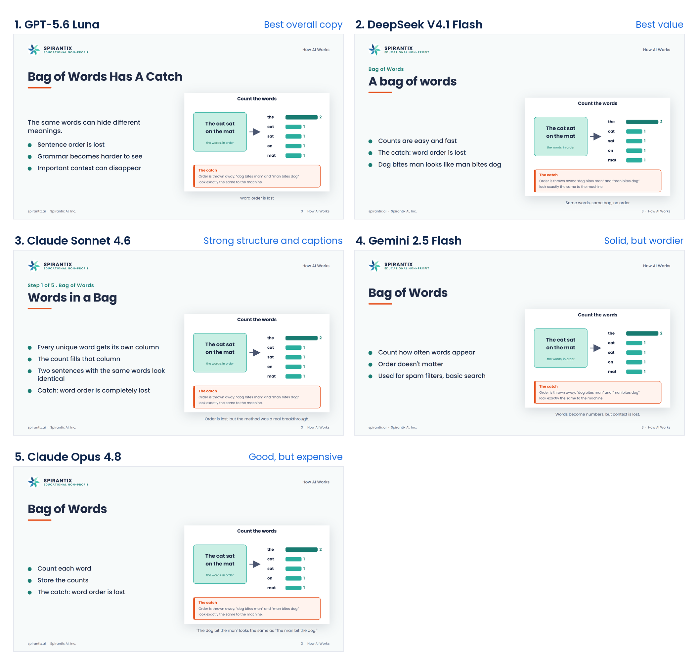
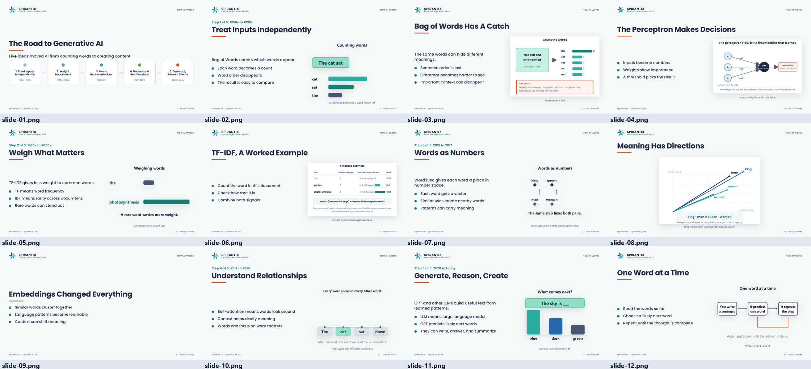
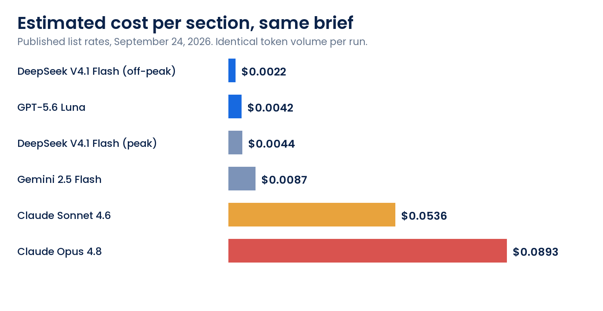

In June we published Multi-Model Strategy Is Table Stakes for AI in 2026. The argument was simple: pairing models to the task beats standardizing on one, and price-based routing is the baseline now, not an optimization. Claiming that is easy. Proving it means running the comparison on your own work instead of reading someone else's leaderboard.
So we ran it. One brief. Five models. One template, one image library, one rendering pipeline. Every model got the same instructions and one pass: no coaching, no retries, no cherry-picking the good half of an output. The whole experiment cost about sixteen cents in API calls, and it changed how we route work.
The Experiment
The task was the 12-slide section that opens our AI session for a senior, non-technical audience: how modern AI actually works, from bag-of-words through embeddings, attention, transformers, and the prediction loop. The brief fixed almost everything:
- 12 slides in a set order, one idea per slide
- one headline, one lead line, and at most three bullets per slide
- one image per slide, chosen from the same catalogue of eleven diagrams
- plain language for an audience of 65 to 85 year olds, with jargon defined in the line where it appears
Because the template, the type scale, the grid, and the image library were fixed, the copy and the layout choices were the only variables. The output went through the same renderer we use for production decks: the model writes slide markup, the pipeline renders it at fixed dimensions and exports it. If a slide reads badly, that is the model's writing, not a styling accident.
Five models ran it:
- GPT-5.6 Luna (OpenAI)
- DeepSeek V4.1 Flash (DeepSeek)
- Claude Sonnet 4.6 (Anthropic)
- Claude Opus 4.8 (Anthropic)
- Gemini 2.5 Flash (Google)
Every model produced a valid 12-slide section, used the eleven diagrams correctly, and returned zero broken references. Not one failed the brief. That is worth pausing on, because it changes the question. The floor is high now, and the interesting question is no longer whether a model can do the work. It is what separates them when they all can.
Same Slide, Five Different Answers
The fastest way to see the difference is one slide. The topic was bag-of-words, an early technique that represents a sentence by counting which words it contains. Here is what each model sent back for that single slide:
| Model | Headline | Lead line |
|---|---|---|
| GPT-5.6 Luna | Bag of Words Has A Catch | The same words can hide different meanings. |
| DeepSeek V4.1 Flash | A bag of words | The sentence becomes a list of counts. |
| Claude Sonnet 4.6 | Words in a Bag | A sentence becomes a table of counts. |
| Claude Opus 4.8 | Bag of Words | Turn a sentence into a table of how often each word shows up. |
| Gemini 2.5 Flash | Bag of Words | A simple way to summarize text by counting each word. |
Four of the five understood the substance. DeepSeek wrote "The catch: word order is lost" as a bullet. Sonnet wrote "Catch: word order is completely lost." Opus wrote "The catch: word order is lost." Gemini wrote "Order doesn't matter" and put the real example in the caption: "The dog bit the man" reads the same as "The man bit the dog."
Only one of them put that point in the headline. Luna led with "Bag of Words Has A Catch." The other four led with a label - "Bag of Words," "A bag of words," "Words in a Bag" - which asks the audience to decode the topic before deciding whether to care. That is the entire finding in a single slide: same input, same constraints, five competent outputs, and a visible gap in editorial judgment.

One slide, five answers. Same brief, same template, same image library, in the order they finished.
What Separated Them
Since all five were competent, judging came down to editorial discipline - the things that decide whether a slide reads from the back of a room. We counted headline length, lead-line length, bullets per slide, and words per bullet, and then read the copy for whether the headline carried a point:
| Model | Longest headline | Longest lead | Max bullets | Words per bullet | Verdict |
|---|---|---|---|---|---|
| GPT-5.6 Luna | 6 words | 10 words | 3 | 6 | Best overall copy |
| DeepSeek V4.1 Flash | 5 words | 12 words | 3 | 8 | Best value |
| Claude Sonnet 4.6 | 7 words | 14 words | 4 | 10 | Strong structure, longest lines |
| Gemini 2.5 Flash | 7 words | 11 words | 3 | 12 | Solid, but wordier |
| Claude Opus 4.8 | 5 words | 15 words | 4 | 7 | No gain at the price |
The pattern was consistent: the winning copy said the most in the fewest words. Luna's headlines state a conclusion rather than a subject, its bullets stay at six words or fewer and parallel in structure, and any jargon gets defined in the same line it appears. Its longest lead line runs ten words, which is short for a full sentence.
Claude Sonnet 4.6 wrote the best structure and captions of the five, and its four-bullet slides were not wrong, just denser. It also ran the longest bullet lines at ten words. Gemini 2.5 Flash was wordier still, with bullets running to twelve words and lead lines that explain rather than charge ahead. Claude Opus 4.8 produced nothing Sonnet had not already produced, at roughly five times the price.
What the Winning Run Looked Like
Twelve slides, one pass, no retries, no hand edits. This is the whole thing, exactly as it came back:

The winning run in full, from the road overview to the final prediction loop slide.
The Cost Gap Is Not a Nudge
Cost is where the premium tier lost ground. Priced at published list rates on the same token volume - roughly 1,200 tokens in and 3,300 out for the section - the identical piece of work costs anywhere from about two-tenths of a cent to about nine cents:
| Model | Input $/1M | Output $/1M | Cost per section |
|---|---|---|---|
| DeepSeek V4.1 Flash (off-peak) | $0.15 | $0.60 | $0.0022 |
| GPT-5.6 Luna | $0.20 | $1.20 | $0.0042 |
| DeepSeek V4.1 Flash (peak) | $0.30 | $1.20 | $0.0044 |
| Gemini 2.5 Flash | $0.30 | $2.50 | $0.0087 |
| Claude Sonnet 4.6 | $3.00 | $15.00 | $0.0536 |
| Claude Opus 4.8 | $5.00 | $25.00 | $0.0893 |
List prices as published on September 24, 2026, applied to the same token volume for each run.

Same brief, same volume, a 40x spread. The two leaders sit at the cheap end.
That is roughly a 40x spread for work of comparable quality - and in this test, slightly better quality at the cheap end. The best copy of the five came in at $0.0042 per section. The most expensive model cost $0.0893 and did not beat it.
Now multiply by a real content calendar. A team producing 200 sections like this one spends about $0.84 with the winning model, or about $17.86 with the most expensive one. At 2,000 sections the numbers are $8.40 and $178.60. Same brief, same template, same quality bar. One of those figures disappears into a rounding error and the other becomes a budget line, and at enterprise volume the same ratio shows up with another zero on it.
There is a second-order effect too. Cheap models get used more. When a section costs a fifth of a cent, rewriting it three times, or generating four variants and keeping the best, is not a decision anyone has to defend. When it costs nine cents, teams start rationing, and rationing quality is how AI programs quietly stall.
What We Concluded
Three findings, in order of how much they should change a buying decision:
- Price stopped predicting quality. The cheap models did not lose to the expensive ones. On the metrics that mattered here, one of them won outright. If model selection still starts with "who is the leader right now," you are paying for a leaderboard position rather than for output.
- The differentiator is discipline, not capability. All five could follow the brief and produce valid work, and all five found the same key insight. Restraint separated the winner. Because that came down to instruction and template, the fastest quality gain is usually in your prompts and house style, not in a bigger model.
- Premium models still have a job, just a narrower one. Use the cheap tier for volume work behind a clear template, and reserve the expensive tier for tasks where judgment changes the outcome: ambiguous problems, high-stakes analysis, final technical review. Pay for reasoning, not for prose.
Where This Lands in Our Own Work
We wrote the result into our routing the same day. DeepSeek V4.1 Flash is the default for deck and copy production, because it matches the winning output on layout and sits at or below it on price, especially off-peak. GPT-5.6 Luna is the pick when the copy has to land with a senior audience on the first read, which is most client-facing work. Both sit in the same price band, so the choice between them is about the audience, not the budget.
Anthropic's Claude tier is out of our automated pipelines. At thirteen to twenty-one times the cost with no visible output advantage on this task, it is a demo model for us rather than a production one. That is a statement about this workload, not about the models: they are strong, and they stay available for the judgment-heavy work where the price is not the deciding factor.
None of that came from a leaderboard. It came from one afternoon and twelve slides of our own material.
What This Does Not Prove
One experiment, one task, one audience. Be careful with the conclusion:
- It tested a writing and layout task for a non-technical audience. A coding task, a data analysis, or a long-document review would likely rank these models differently, because those tasks reward different strengths.
- It was one pass per model. Repeating it can move a model a place up or down, especially on subjective copy.
- The prices are list rates on one day, September 24, 2026. Providers change prices, and off-peak discounts move the cheap end even further down.
- Twelve slides is a small sample. Treat the ranking as directional, not definitive.
The durable part is the method, not the medal table.
Run Your Own Bake-Off in an Afternoon
This took one afternoon and paid for itself immediately. The method is not proprietary, and it does not need an evaluation team:
- Pick one real task. Not a benchmark. A piece of work you would actually ship, with your own house style baked into the brief.
- Freeze everything except the model. Same brief, same template, same asset list, same number of attempts. One pass each, no retries, no hand-editing.
- Score what your audience would notice. For us: headline length, bullet length, takeaway versus topic, jargon defined, and nothing clipped or broken.
- Price the winner at your volume. Cost per run times your real monthly count. The ranking often changes once you multiply.
- Write the result into your routing. A default model per task type, an escalation rule, and a price ceiling you are willing to pay when you escalate.
Then repeat it every few months. This market moves faster than most procurement cycles, and last quarter's winner is rarely next quarter's cheapest option.
FutureInSites helps companies move from AI experimentation to execution, including evaluation and model-routing work like this bake-off. If you want to know which model should do which job in your stack, get in touch. The broader argument is in Multi-Model Strategy Is Table Stakes for AI in 2026.
References
- DeepSeek. "Models and Pricing." (Off-peak and peak API pricing.)
- OpenAI. "API Pricing."
- Anthropic. "Pricing."
- Google. "Gemini API Pricing."
- FutureInSites. "Multi-Model Strategy Is Table Stakes for AI in 2026." June 9, 2026.